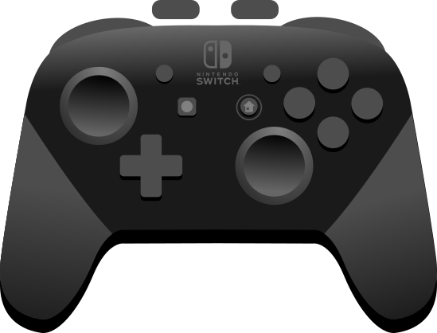

Artwork: shmove / Open Joystick Display · License
Edge, corner, drag and release observations have independent checks. This illustration is simulated.
✓ PASS · A press / hold
○ NOT RUN · A release
○ NOT RUN · right stick negative Y
! UNSUPPORTED · Home through this adapter
Unsupported and manual-only observations do not count as automated passes.
DESIGN SPECIMEN — simulated values, not an emulator capture or a passing test. Final native layouts adapt to each platform; this specimen illustrates the spacious layout.
This product includes software developed by "Open Joystick Display Project and 'Anthony Mattera' (http://www.ojdproject.com/)." Artwork adapted for GamepadViewer by shmove; original asset bytes retained. Input-state composition adapted for this simulated preview. No affiliation or endorsement is implied.